Tutorial of the VRML-Editor "dune"
http://wdune.ourproject.org/docs/usage_docs/dune_en_tutorial.html
Download the newest version of "dune/white_dune" (currently 0.29beta) from
http://wdune.ourproject.org/
white_dune is program to change or create VRML97/VRML2 files.
The declaritive language VRML (Virtual Reality Modelling Language) is
used to discribe 3D graphic objects ("nodes") in a tree structure
("scenegraph").
Additionly there are ways of messages (ROUTEs) between the nodes to
set the runtime behavior.
The VRML-Editor "dune" tries to show this informations completely
in a graphical userinterface.
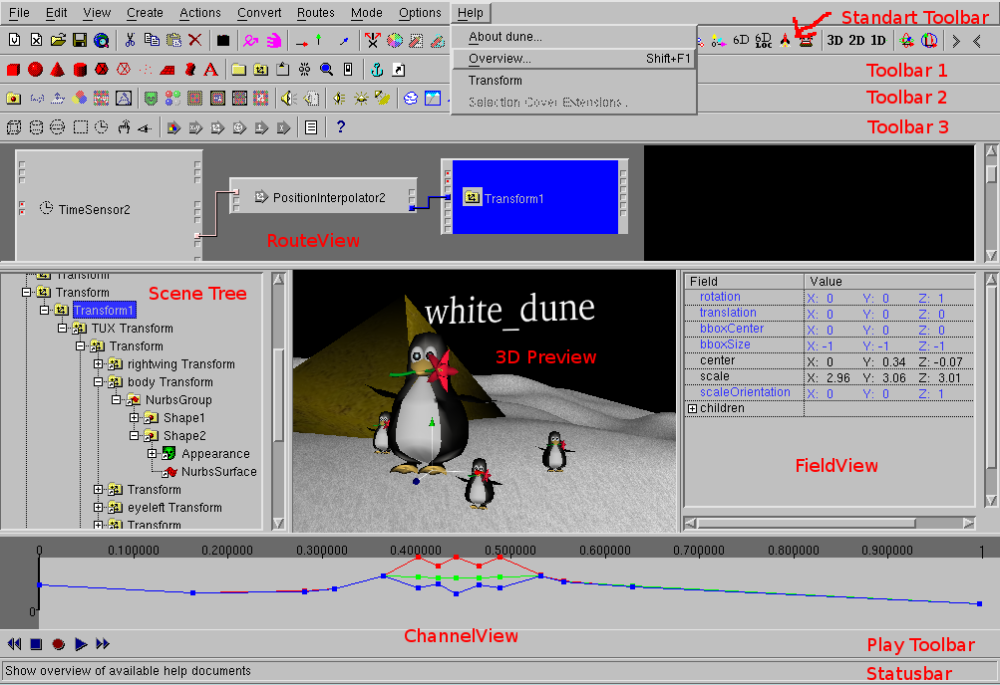
Beside some toolbars for icons and messages "dune" has 5 windows.
Except the "3D Preview" window, all windows can be switched on or off
via the menupoints in View , according to the current
operations.
- Scene Tree
This window contains the scenegraph. It shows the structure of a VRML
file (the information, how the VRML nodes are placed).
- Field View
This window contains the fieldvalues, the numbers (or Textstrings etc.)
in a VRML file. Only the fields of the current selected node are shown.
- Route View
This window contains the ROUTE's, the ways of information, which are
used to exchange messages ("events") between the VRML nodes during
program run.
- Channel View
This window is exclusivly used for interpolator nodes.
Interpolatornodes are mainly used for animations in VRML97.
- 3D Preview
This windows shows a preview of the graphical result of a VRML file. In
difference to the other windows the matching program part is not
complete in implementing the VRML97 standard.
Some nodes like "PixelTexture", "MovieTexture" and self definied
"PROTO" or "EXTERNPROTO" nodes are not shown at all (yet). The
preview do not support VRML scripting or VRML interaction (yet).
Not all
all fieldvalues of some nodes are shown correctly (yet) (e.g.
IndexedFaceSet.ColorPerVertex oder Extrusion). If you are in doubt, use
the menupoint File -> Preview to proof the current
situation in a "real" VRML-Browser.
Dune is still in development, it do not run as stable as it should.
Is the work since the last save lost, when dune crashs ?
No, not automatically.
"dune" tries to save the VRML97 file short before the crash. When this
try is sucessful, dune write the following under Linux/UNIX/MacOSX
Internal Crash !
Try to save Files
attempt to write file to /home/someone/.dune_crash_NUMBER_NUMBER.wrl
write sucessful
in the standarderror output of the window, that started dune
and in the systemconsole (e.g the window of the "xconsole" application).
Under M$Windows a similar Messagebox appears
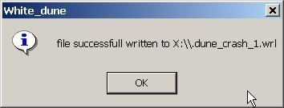
The system variables under M$Windows are "%HOMEDRIVE%" and
"%HOMEPATH%", "$HOME" under Linux/Unix/MacOSX.
If dune is restarted and the file menu is opened, you should see
the name of the file starting with ".dune_crash".
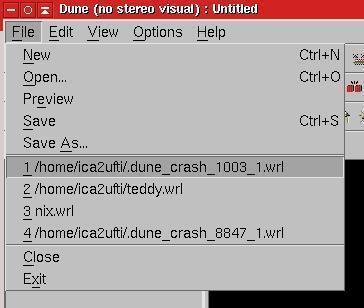
Click it to load the file and save it as another file.
This Method can fail, if the error that led to crash
has damaged the internal data structure of the program.
In this case it's worth to search in directory of VRML-files for
temporary files (".dune_*"), that are produced during the execution of
File->Preview or File->Textedit.
These Files will be deleted at a normal program end, but not in case of a
program crash.
Animation
If big VRML-files are processed, the work in white_dune
will be very troublesome, because for example the route view is
not clear cause of overcrowding.
As compensation it is possible to use the VRML_nodes "Inline" by
white_dune. So that you can pack a big VRML-File in only one
VRML-node. For example you can pack objects for the background
(or a rigid, complex object that shall be moved in a animation)
into one VRML-file of its own.
A range of CAD- or 3D-modeller-programs support this mode of operation by
providing a option to export only selected or not hided 3D-objects as a
VRML-file.
For example, the free 3D-modeller Wings3D supports the export of
selected 3D-objects.
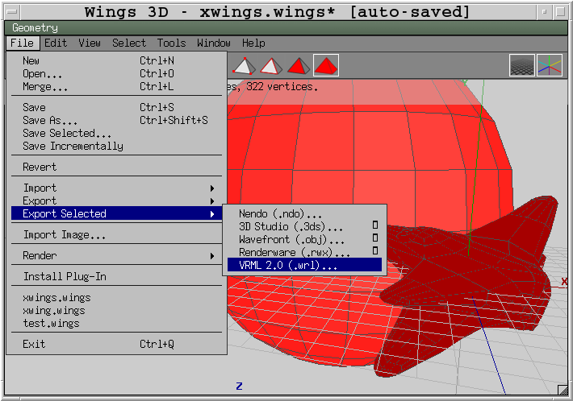
The use of "Inline" nodes is also the key to use several tools as
3D-modellers at the same time, without the need to do additional work to
refresh the VRML-file after every change.
If you own 3D data, try to export VRML97/VRML2 files from your favorite
3D program now or create a few small VRML-files quickly.
Take care about to create only few faces (Polygone) if possible.
The latest versions of a lot of advanced 3D-Modellers support polygon
reducing during work or export.
You can use the VRML data files of a Wings3D example
for foreground and
background
or just use white_dune, if you have no 3D-modeller in this moment.
For example you can create a sphere with the menuitem
Create -> Shape -> Sphere.
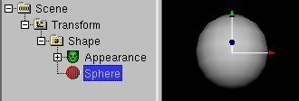
and use File -> Save As... to export the
object in a VRML-file.
Now start white_dune and use Create -> WWW -> Inline to
insert your VRML-file as "Inline"-node.
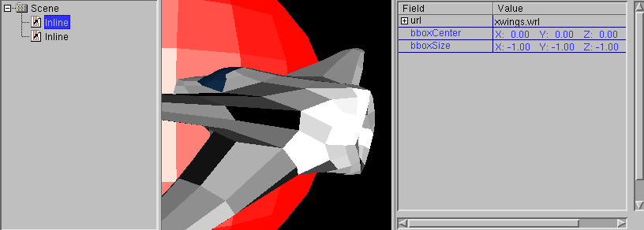
When using the Inline node you have to take extreme care about not
to inline a file by itself (also not indirectly). In this case most
tools allocate more and more memory (cause the VRML file always loads itself)
and finally crash after a long time. In case this occures with white_dune,
you need to set either "Limit number of loaded inlines" in the
Options -> Preferences... dialog to low values or
you need to rename the inlined file. Then you can repair the problem.
Use the menuitem Actions -> Show Polygons/Primitives in
StatusBar to check, if your 3D-object has too many faces.
If your graphics card does not have 3D-acceleration, your
3D-object shall contain less than a few 1000 polygones.
You will notice, that you can not move inlined 3D-Objects inside of
white_dune in this situation.
You need a Transform node to move a object, you can create one with
Create -> Grouping Node -> Transform.
The Transform nodes in VRML is responsible for movement, rotation, scaling
etc. of rigid bodies. For example, this is discribed for in the VRML
standard
http://www.web3d.org/x3d/specifications/vrml/ISO-IEC-14772-IS-VRML97WithAmendment1/part1/nodesRef.html#Transform
(this link can be reached with the menuitem
Help -> Transform when a Transform node is selected).
To set, which 3D-object is used for the Transform node,
its icon in the scenetree view must be moved.
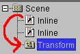
Select the transform-nodes in scene-tree-window.
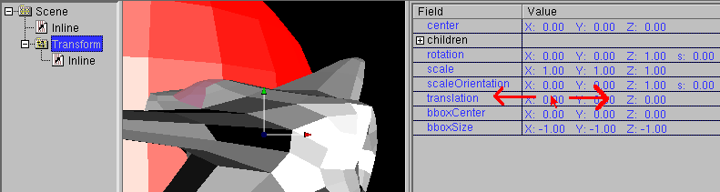
Please note that you can change the values of the fields of
Transform node now by moving the Mouse with the Mouse button held down on
in FieldViewWindow.
Use the Menu-item Actions -> Animate (still by
selected trasform-nodes). Hereupon a dialog appears.

Beside the length of animation (and if required the already defined time
source) you can also select the target fields (or EventIn("input
message")) of the target node (Transform here). The fields "set_translation"
and "set_rotation" describe movement and rotation and are identical to
the fields "translation" and "rotation" in the FieldView of a Transform node.
In order to input the data with the mouse in the 3D Preview window it is
needed to set the menu-item Mode -> Move or
Mode -> Rotate.
Use now Mode -> Move for translation.
Open the ChannelViewWindow with View -> Channel View
and click to the the PositionInterpolator node in SceneTreeWindow.
Animation means that the values (for example movement, rotation, color,
transparency and light intensity etc.) change according to
the changing of the time. In the ChannelView window the position of the
black blinking bar means the time, the colored lines show the change of
the values.
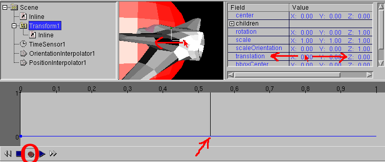
- Click the red record-icon on the VCR-Toolbar.
- Click in the ChannelViewWindow in order to choose a new time
period.
- Push the trihedron of the 3D-object in another direction with
the mouse or select the Transform node in the SceneTreeWindow.
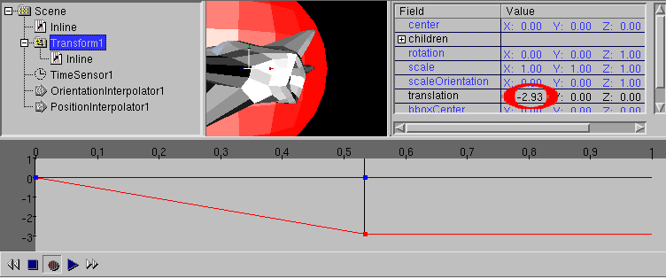
Click both recorder symbols for recording and play in the
vcr toolbar

and use the trihedron in the 3D PreviewWindow in order to move around.
The recorded movings should be played back too.
Open the ChannelViewWindow with View -> Channel and click the
PositionInterpolator node in the SceneTreeWindow
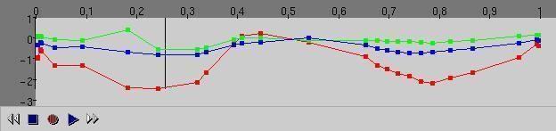
Click the recorder-symbol "stop". The animation dates can be
changed with mouse in the ChannelViewWindow e.g. a value can be changed
by moving a point or a new value can be inserted.
A time range can also be deleted, by drawing on a black bar in the
ChannelViewWindow and deleting the point in the bar with
Edit -> delete.
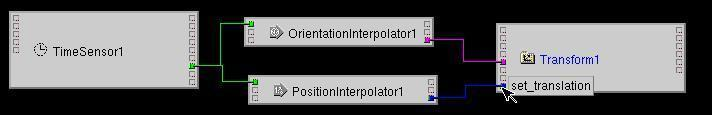
Open the RouteView Window with View -> Route View and move
the nodes involved in animation.
Point the mouse on the input of the Transform-node in the RouteView.
Compare them with the
the dialog
window at the begin of this tutorial.
Z-fighting/"Thin Wall"-Problem
Use the menuitem Create -> Shape
-> Box twice. They are created one upon the other exactly.
Click on the "Plus"-symbol in the SceneTreeWindow at the Appearance node
of one of the objects and select the material node which is responsible for
color effects.
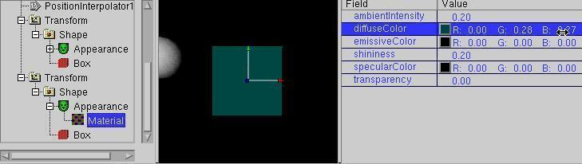
Change the color value for the field "diffuseColor", e.g. via the
menu item Action -> Color Circle.
Move a object a little upside and look to the result effect.
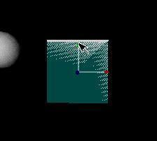
It can be seen, that the two surfaces that are very close to each other
produce problems in realtime-3D. These problems appear also in other
programs e.g. in 3D computer games or the 3D preview window of a
movie-modeller.
Indeed these problem can be ignored by a movie_modeller: during the
lengthy render process of a movie-modeller the view will be very calculated
exactly, which of
the two surfaces is in the front and nothing about the Z-Flighting problems
will be find in the completed pictures of the end-product.
This is different in VRML, the creation of pictures in the
VRML-Viewer works also via a realtime-3D-technique, which must render a
picture in about 1/25 second. Use
File -> Preview in order to view your VRML-file with the
help of a VRML-browser-plugin.
The Z-fighting problem is very damaging, because its effects could
depend on the used software (VRML-Viewer and graphic driver) and
hardware (graphic cards with 3D-acceleration).
Interaction
Move the both objects enough apart.
Use the menuitem Create -> Sensor -> SphereSensor
in order to insert a sphere sensor.
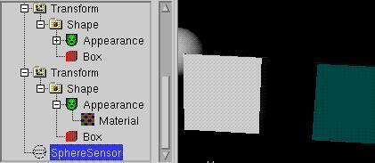
Shift the spheresensor now in a path of the scenengraph branch that
contains a box.
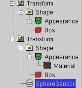
and look for the Transform node of the other box in the
RouteView window. In the RouteView window the selected node is labeled
blue.
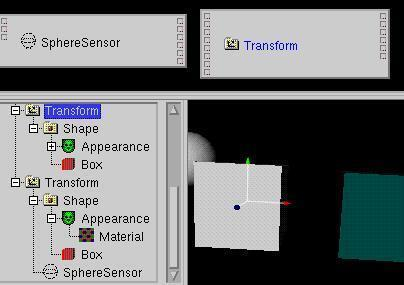
Set a route from SphereSensor.rotation_changed to
Transform.set_rotation now.
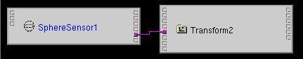
Unfortunately "dune/white_dune" is only a VRML editor but not a
adequate VRML browser for a long time. To show interaction you must use
a "true" VRML browser:
Use File -> preview to start a VRML browser.

The change of the cursor shows the possibility of a interaction, so
that you can intervene the world with click and drag of the mouse.
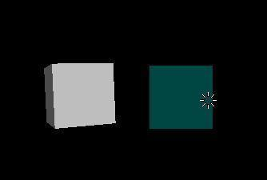
Later: a list with examples about simple interaction can you find
at the URL http://wdune.ourproject.org/docs/typical_vrml_examples/index.html
Simple 3D modelling
"dune/white_dune" is has also some simple NURNS nodeller
features. Create a nurbs-surface with the menu-item
Create -> VRML 200x -> NurbsSurface
-> Plain/Box/Sphere/Cone/Cylinder or convert a according
seleted Box/Sphere/Cone/Cylinder (or NurbsCurve) object with the
menu-item Action -> convert to
NurbsSurface.
Most useful is symetric modelling: one side of
the object ought to be the same as the other side. Use the
menuitem Action -> X symmetric modelling.
If this menuitem is active, every movement of the control point
(the white small box) of one side
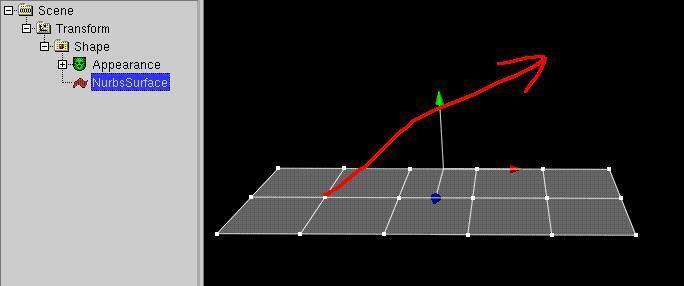
will be transfered to the other side.
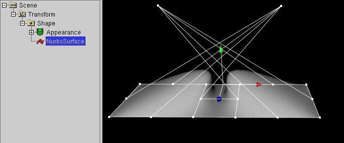
Later: a introduction to the theme NURBS you can find under:
http://wdune.ourproject.org/docs/usage_docs/dune_de.html#nubs
.
further informaions to work with NURBS in "dune/white_dune" you can
find under:
http://wdune.ourproject.org/docs/usage_docs/dune_de.html#nurbssymetric
Too many polygons
Click the NurbsSurface node and change the fields u/vTesselation
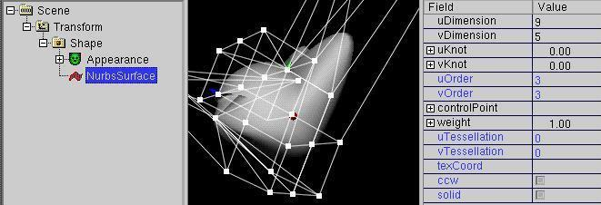
Besides very small values
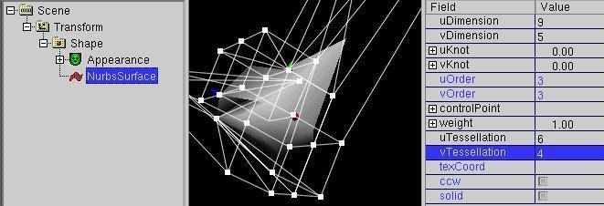
you should big values also test. The number of the polygons lie about
by "uTesselation * vTesselation".
Test, whether moving of the object lead to jerks, when these values
are bigger than 100 or 1000.
Save your VRML file now (under M$Windows best at "C:\temp") with the
menuitem File -> Save as.
When a NURBS shape is converted to a mesh (IndexedFaceSet in VRML)
large uTesselation/vTesselation values will create a unnessesary very big file.
Saving such a mesh would rigorously test your patience
(especially on a M$Windows netdrive).
Automatic conversion from NURBS to a IndexedFaceSet occures when using
File -> Export as... -> pure VRML97 or with a unmindful click on
the menuitem file -> preview with the setting
pure VRML97 in the dialog Options -> Preview Settings...
(which is needed when your VRML browser do not support ISO/IEC 14992:2002
(VRML97 Amendment 1)).
Superformula Modellierung
White_dune has support for 3D-modelling based
on the so called "superformula"
This formula has been found by a biologist a few years ago and can be used to
form n-symetric shapes similar to shapes in nature like flowers, leafs, insect
bodies, shells or starfishs.

See this range of shapes,
which are all done with the SuperShape PROTO.
Superformula based shapes are not part of VRML97 by itself and are
implemented by a PROTO (self defined VRML97 node) with scripting
("scripted PROTO").
-
The SuperExtrusion PROTO uses the superformula to account a 2D polygon
in the X-Z-plane and form a shape by repeating this polygon in the
Y direction along a curve. The curve is similar to a NurbsCurve and can
be changed by moving the controlpoints. This shape can be converted to
a Extrusion and some of its parameter work similar to a Extrusion.
Unlike the Extrusion node, the scale parameters are not applied to
each spine point, they are smeared over the whole spine.

-
The SuperShape PROTO uses the superformula to account a 2D polygon
in the X-Z-plane and form a shape using the superformula also in
the Y-Z-plane similar to spherical coordinates.

This shape can be converted to a IndexedFaceSet or approximated to a
NurbsSurface.

-
White_dune also has a PROTO for the superellipsoid, a special case of a
supershape and is working similar. It can be used to form a sphere,

a box, a cylinder,

a octaeder and rounded forms of this shapes


with only 2 parameters.
Like the SuperShape PROTO the SuperEllpsoid PROTO has a field "border",
e.g. to form a half sphere.

The Field "creaseAngle" (available at all superformula based PROTOs)
works like in the IndexedFaceSet or Extrusion nodes to show
or smooth edges.

This shape can be converted to a IndexedFaceSet

or approximated to a NurbsSurface.

A superformula shape converted to a NurbsSurface loose some of its
exact geometry

but can be changed via the controlpoints.

Superformula based PROTOs have (similar to NURBS nodes) Field for
tessellation and can be converted automatically to a IndexedFaceSet or
Extrusion via
File -> Export as... -> pure VRML97 or at the
preview for "classic" (ISO/IEC 14772:1997) VRML97 browsers.
Finishing of VRML model
Different 3D modelling program like catia, 3D Studio Max, Cinema4D,
maya, fromZ, blender etc. can export VRML97 (or at least
write convertable data formats). But you will not always be lucky with
the results. Jockers talk about "black holes from maya".
The reason of it is not always concerned with program error. You
should remember that many of these programs are not primary made for
the creation of realtime-3D-data, but e.g. made for
the creation of movie-data, so that a picture will be calculated for
minutes/hours (or longer). Thus there are effects, like e.g. "true"
multiple reflexes,
which can not be calculated within 1/25 second on a normal computer system.
Therefore it will not be so easy to convert the according matrial
properties to VRML.
Create a (simple ?) VRML file with another 3D Modeller (e.g.
Wings3D, Art of Illusion, ac3D, maya, 3D Studio MAX, Cinema 4D etc...).
Use the menu-item File-> Import
in order to insert the 3D Modell in your 3D world. The
most 3D modeller export entirely IndexedFaceSet nodes ("mesh", compounds
composed of single polygons) for geometry.
The "raw" geometry data is the simplest case:
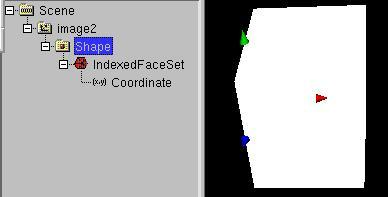
If your export did not fail to this situation, you can try to reach the
situation via deleting all
the other nodes in a VRML file.
Click on the "shape" node and use
Create -> Material/Texture -> Appearance
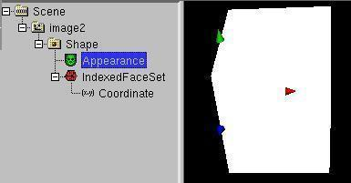
Click on the "Appearance" node and use
Create -> Material/Texture -> Material
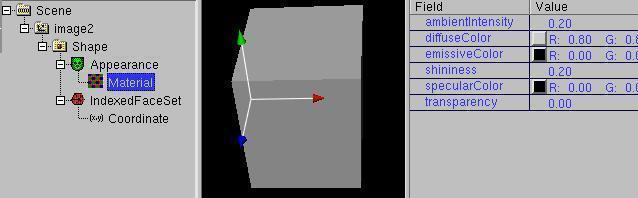
so that the color of the whole object (not the single polygons as with the
Color node) can be changed. Click on the
"Appearance" node in order to paste a picture onthe object. Use
Create -> Material/Texture -> ImageTexture and choose a
picture file. The VRML standard
requires the support of the open standard picture formats ".jpg" and ".png"
exclusively. Using other picture formats is asking for trouble.
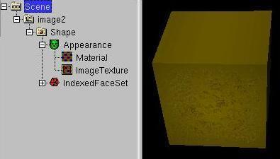
Texture files (also MovieTexturs (.mpeg (MPEG1)) are often exported,
but with a wrong or problematic path.
When the VRML file is copied to another place, the path can become invalid.
When the VRML file is transfered to a UNIX/Linux-based Webserver
Driverletter, whitespaces and non ASCII Letters (like umlauts)
in the path (and filename) become a real problem.
To reduce handlingproblems it is recommended to copy all files in the
same path as the VRML file and use the menuitem
Actions -> Set Path of all URLs to to set all paths to the
relativ path . ("." means current path).
If you have bad luck, the object was exported with false side
information.
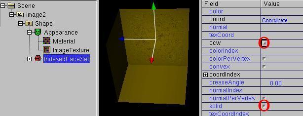
Change the fields "ccw" ("other side") or
"solid"("one-sided"/"two-sided") in order to solve the problem.
Be careful about the two-sided thin compounds, as the backside could be
"translucent" due to Z-flighting/"thin wall"-problems.
In order to blur the edges you can use the field "creaseAngle".
The angel of the edges in radians (1.57 are about 90 degree, 3.14
("Pi") are about 180 degree) must be less than the value of "creaseAngel"
The blur of edges allows to improve 3D-objects with few faces.
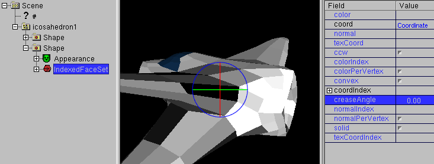
3D-objects with few edges are very important for a high framerate in
realtime-3D.
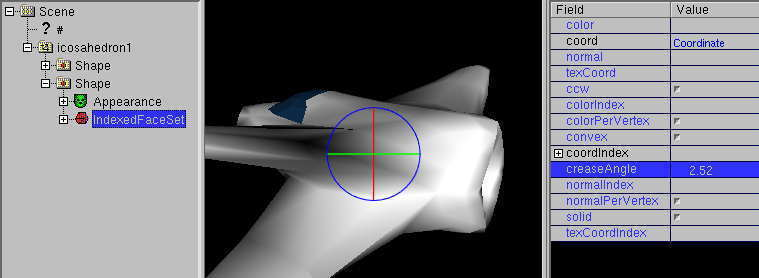
Several 3D-modellers with VRML export create VRML objects with the problem,
that the center of rotation (symbolized as a trihedron or 3 colored rings
in white_dune, field Transform.center) is setted far away from the object
itself.
Usually this modellers set the center of rotation at the null point of
VRML-world instead.
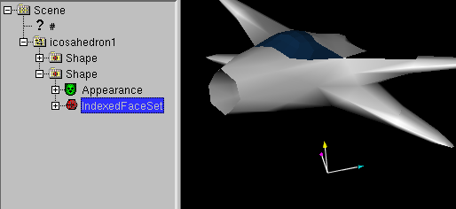
If try to roll the object around its center of the Transform node, a small
roll angel cause the object to leave its position. Especially in the
case of big distance to null point, the orbit movement around the turn
point could be wrongly seen as a shift movement. Similar strange effects can
also occure by scale up/scale down.
The position of the roll point is definited by the fields "center" of
Transform node.
Besides over the Fieldview the field "center" can
also be changed in the 3D Preview window by using the menuitem
Mode -> Center and the
trihedron in the 3D Preview window.
Indeed the change of the value for "center" affect also the rotation
and the scale of the compound. The order of the graphic operations in
VRML is defined in a way, that a movement of the center
also lead to a movement of the object in case of a already set
non-zero rotation (or a non-one scale).
In the 3D-Preview-Window this can lead to the impression, the object seems
to dodge the center of the rotation .
In order to reduce this problems a menuitem Actions -> Set
center to (need Transform ->Shape ->geometry) -> mid of
boundingBox is part of white_dune.
Thereby a geometry node (e.g. IndexedFaceSet, PointSet, Box etc.) must
be selected, which is contained in a Shape node and in a
Transform node.
By the excution of the command Actions -> Set center
to... the center of rotaion will be setted in the center of the
box that surround the geometry.